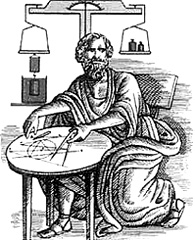

Archimedes (ca. 287-212 v. Chr.), griech. Mathematiker und Physiker, verfasste bedeutende Werke über ebene Geometrie und Stereometrie, Arithmetik und Mechanik. Archimedes wurde in Sizilien geboren und lebte auch in Ägypten. Auf dem Gebiet der Mathematik machte er bahnbrechende Entdeckungen, seine Studien über die Flächen und Volumina krummliniger Flächen und Körper, führten zur Infinitesimalrechnung. In der Mechanik entwickelte Archimedes die Hebelgesetze. Außerdem wird ihm die Erfindung des Flaschenzuges zugeschrieben. In Ägypten erfand er die Wasserschnecke, mit der man Wasser von einem tieferen auf ein höheres Niveau befördern konnte. Die größte Bekanntheit erlangte Archimedes mit der Entdeckung eines grundlegenden Gesetzes der Hydrostatik, auch als Archimedisches Prinzip bekannt.